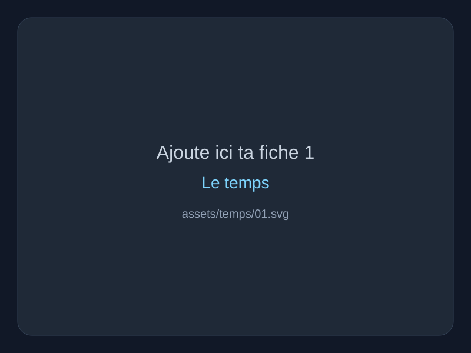
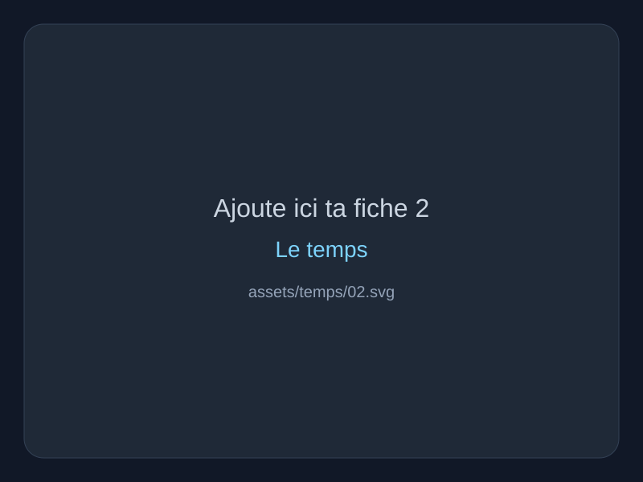
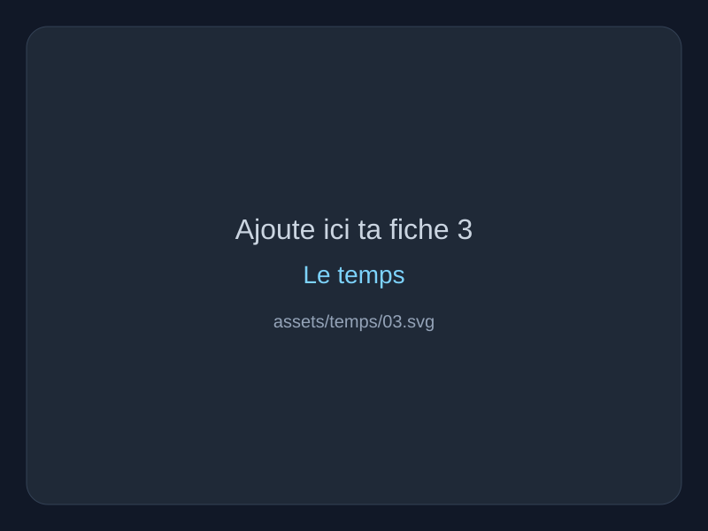
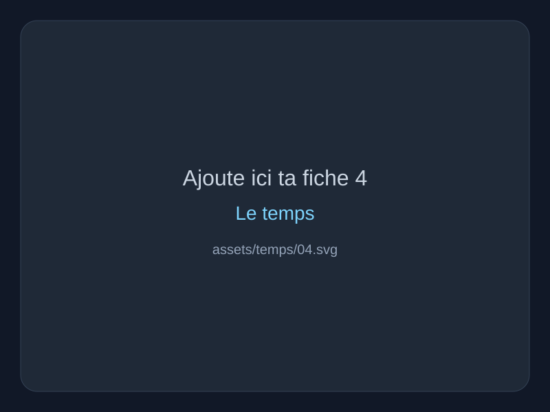

Définitions essentielles
- Le temps désigne la succession des moments, mais aussi l’expérience vécue de la durée.
- Le présent n’est jamais un simple point neutre : il ouvre vers la mémoire et l’attente.
- Le temps est inséparable de la finitude humaine.
Le temps comme succession, durée vécue, mémoire et rapport à la finitude.
Si tu retrouves tes anciennes photos, remplace simplement ces fichiers dans assets/temps/ sans rien changer au HTML.




Avant un DST, tu peux relire uniquement les grandes distinctions utiles à l’explication de texte.
Distinguer temps mesuré et durée vécue. Bergson est central pour penser la durée ; Augustin pour l'énigme du temps ; Heidegger pour le lien entre temporalité et existence finie.